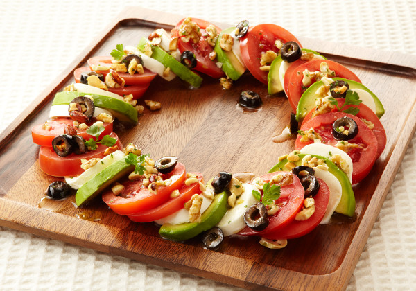

トマト with アボカド

アボカドとナッツの美カプレーゼ
調理時間：15分、エネルギー：288kcal、塩分：0.8g
材料（4人分）
- カゴメ 高リコピントマト
- 4個
- モッツァレラチーズ
- 1袋
- アボカド
- 1個
（ドレッシング）
- EXバージンオリーブオイル
- 大さじ2
- 白ワインビネガー
- 大さじ2
- ミックスナッツ
- 30g
- ブラックオリーブスライス
- 20g
- 塩
- 小さじ1/2
- ブラックペッパー
- 適宜
- イタリアンパセリ
- 適宜
作り方
- 1
- ドレッシングを作る。ナッツは厚手のビニール袋に入れ麺棒で粗く砕く。
ボウルにドレッシングの材料を全て入れ、よく混ぜ合わせておく。
- 2
- モッツァレラチーズは水気を切って厚さ8mmの半月切りに、トマトとアボカドも厚さ8mmにスライスする。
- 3
- 器に②を交互に盛り付け、①のドレッシングをかけて出来上がり。